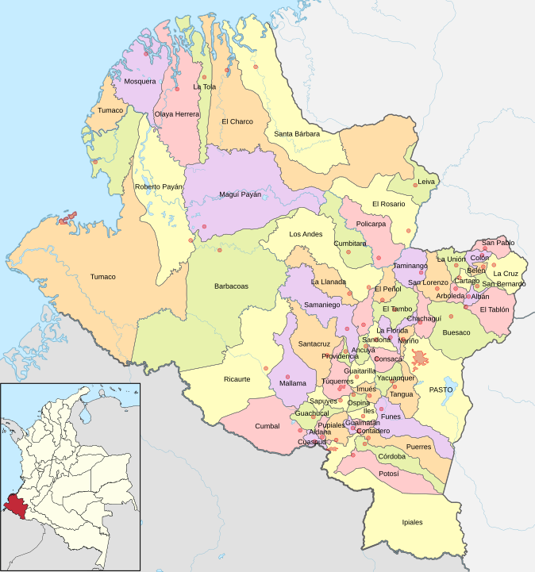

Nariño
El departamento de Nariño, en el suroeste de Colombia, es conocido por su rica biodiversidad y paisajes montañosos. Limita al sur con Ecuador y alberga el volcán Galeras, una de las montañas más emblemáticas. Su capital, Pasto, es famosa por sus festividades, como la Feria de las Flores. Nariño es también un importante productor de café, frutas y hortalizas, con una cultura que combina influencias indígenas y afrodescendientes. Además, destaca por su variada gastronomía y tradiciones folclóricas

Costumbres
- Carnaval de Negros y Blancos: Fiesta cultural y patrimonial que se celebra en enero, con desfiles, música, danzas y la tradicional pintura de rostros.
- Festival de la Pastusa: Celebración en honor a la cultura y tradiciones pastusas, que incluye música, gastronomía y artesanías locales.
- Rituales indígenas: Presencia de comunidades indígenas que mantienen vivas sus tradiciones, como la agricultura ancestral y festividades propias.
Comida típica
- Cuajada con melao: Postre a base de cuajada (queso fresco) acompañado de melao (jarabe de panela)
- Ajiaco nariñense: Sopa hecha con papas, pollo y otros ingredientes, muy apreciada en la región.
- Bocadillo de guayaba: Dulce típico que se consume como merienda, elaborado a partir de guayaba.
Actividad económica principal
- Ganadería: Cría de ganado bovino y ovino, que contribuye a la producción de carne y lácteos.
- Agricultura: Producción de café, maíz, hortalizas y frutas, como la mora y el tomate de árbol, que son fundamentales para la economía local.
- Comercio: El intercambio de productos locales y artesanías, especialmente en mercados y ferias, es un motor importante en la economía de la región.
Población
- Diversidad étnica: La población incluye mestizos, afrodescendientes e indígenas, cada grupo con sus propias tradiciones y costumbres.
- Crecimiento urbano: Pasto, la capital, es el centro urbano más grande y dinámico, con una población en constante crecimiento.
- Cultura comunitaria: La población es conocida por su hospitalidad y el fuerte sentido de comunidad, que se refleja en sus celebraciones y actividades cotidianas.
Atrás